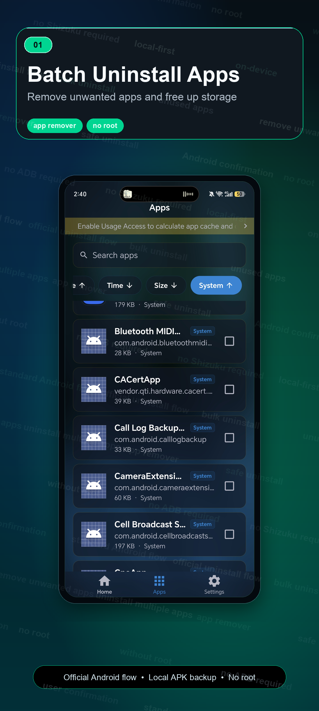
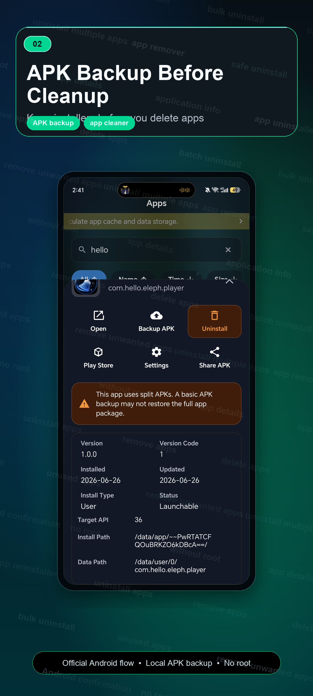
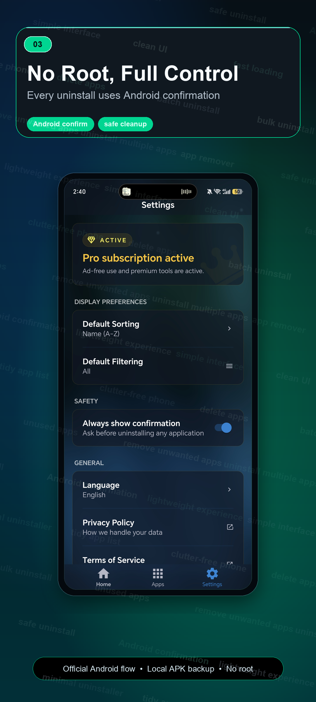
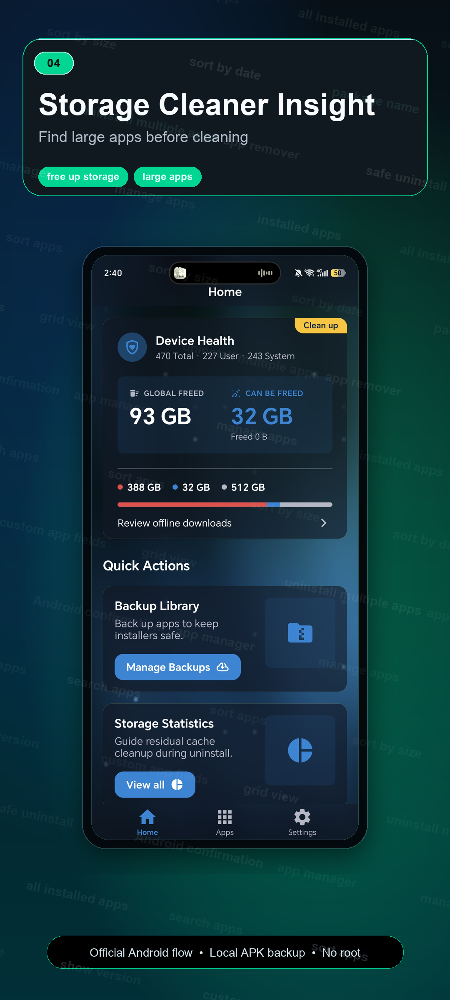
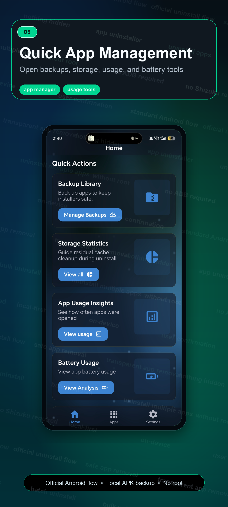
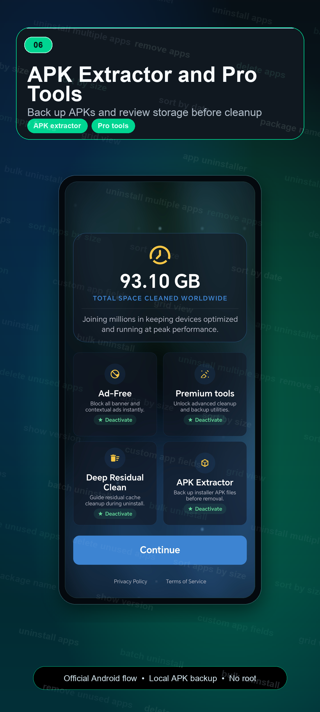

Batch uninstall apps
Search installed apps, select multiple apps, and manage old apps or old games from one list.
Batch uninstall apps, remove unused apps, back up APK files, sort apps by size, and reclaim storage without root. Every uninstall follows Android's official confirmation flow.
Uninstaller keeps cleanup work focused: find apps, compare app size, back up APK files, and remove what you no longer need through Android's standard flow.
Search installed apps, select multiple apps, and manage old apps or old games from one list.
Review selected apps, then let Android handle the official uninstall confirmation.
Back up APK installers locally, save APK files, share APK files, install backups, or delete archives.
Sort apps by size, find large apps, and understand phone storage before uninstalling.
Browse package name, version, install date, update date, user app labels, and system app labels.
System and pre-installed apps are marked clearly and open Android App Info when direct removal is restricted.
Uninstaller is designed for clear review and local-first processing. It does not bypass Android confirmation, request root access, or change protected system areas.
The interface focuses on scanning installed apps, comparing storage impact, reviewing app details, backing up APK files, and confirming uninstall actions.






The workflow is built around review, backup, and Android's standard uninstall process.
Search, filter, and select apps you no longer need.
Check size, version, install date, package name, and app labels.
Save APK installers locally before cleanup when you want a backup.
Android shows the official confirmation prompt before removal.
Clear boundaries matter for Android cleanup tools. These answers explain what Uninstaller does and what Android controls.
No. Uninstaller works without root and follows Android's standard uninstall confirmation flow.
System and pre-installed apps are marked clearly. When Android blocks direct removal, Uninstaller opens Android App Info instead.
APK backup saves app installer files locally before cleanup, so you can keep, share, install, or delete archived APK files.
App lists, APK backups, and cleanup actions stay on your device unless you choose to share an APK backup file.
Uninstaller Lite is a separate package with its own Google Play listing. The Lite website route is planned separately.
Review selected apps, storage size, install date, and whether you want an APK backup before Android confirmation appears.
Use Uninstaller for batch uninstall, app remover tools, APK backup, storage cleanup, app manager details, and no-root review before removal.